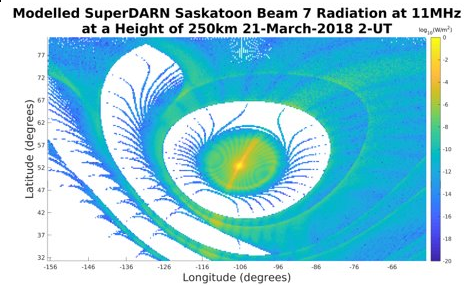

Hi, I'm Kyle Ruzic
My Qualifications
Education
B.Sc. Major in Physics | Sept. 2014 - Dec. 2018 University of Calgary- Related Courses:
- Data Structures, Algorithms, and Their Analysis; Computing Machinery; Introduction to Cryptography; Computational Physics I & II; Computational Physics Based Research Thesis
Work Experience
Summer Research Student | Summer 2018 University of Calgary- Developed a 3D model of radiowave propagation through the ionosphere that is used as a reference for the data received by the radio receiver onboard e-POP.
- Presented research at the Canadian Undergraduate Physics Conference (CUPC 2018),
- Gained experience in the methods and approaches used in scientific research.
- Communicated complicated topics to the students in easily digestible ways
- Gained valuable techincal communication experience
About Me
Bio
I am a recent physics graduate from the University of Calgary interested in pursuing a career in software development. I have a passion for learning new things and a knack for solving complex problems with innovative software solutions.
What I Know
Languages
Matlab
Python
Javascript
Skills
Some of my other skills are; Numpy/Scipy, HTML5, CSS, Vue.js, and Git.
Projects

Raytrace Model
A 3D model of radiowave propagation through the ionosphere built using MATLAB. The model is generated by tracing many rays using the PHaRLAP raytracing package and then computing the power at each point along the rays path and binning the power according to the rays location.
See More